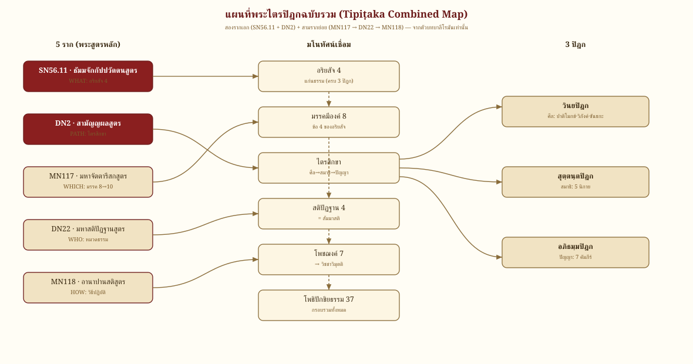

🎯 ข้อค้นพบหลัก
แผนที่พระไตรปิฎกที่สมบูรณ์ที่สุด = "สองรากเอก + สามรากย่อย":
| บทบาท | พระสูตร | ครอบคลุม |
|---|---|---|
| รากเอก โครง/สารบัญ (WHAT) | ธัมมจักกัปปวัตตนสูตร (SN 56.11) | อริยสัจ 4 = ธรรมะทั้งหมด (ครบ 3 ปิฎก 3 รูปแบบ) |
| รากเอก ลำดับมรรค (PATH) | สามัญญผลสูตร (DN 2) | ไตรสิกขา = 3 ปิฎกเป็น 3 ขั้น |
| รากย่อย วิเคราะห์มรรค (WHICH) | มหาจัตตารีสกสูตร (MN 117) | มรรค 8→10, โลกิย/โลกุตตร → อภิธรรม |
| รากย่อย หมวดธรรม (WHO) | มหาสติปัฏฐานสูตร (DN 22) | นิวรณ์/ขันธ์/อายตนะ/โพชฌงค์ → อภิธรรม |
| รากย่อย วิธีปฏิบัติ (HOW) | อานาปานสติสูตร (MN 118) | อานาปานสติ 16 ขั้น → วิชชาวิมุตติ |
แกนคู่: SN 56.11 บอกว่า "ธรรมะคืออะไร" (อริยสัจ 4) + DN 2 บอกว่า "ปฏิบัติอย่างไรเป็นลำดับ" (ไตรสิกขา = 3 ปิฎก) — ทั้งสองบรรจบกันที่ "มรรค" (อริยสัจข้อ 4 = ไตรสิกขา)
🗺️ แผนที่ฉบับรวม (Combined Map)

📄 อ่านรายงานฉบับรวม · 🔗 ดาวน์โหลดโครงสร้าง node–edge (JSON, 21 โหนด 24 ขอบ)
📂 งานวิจัย 5 ชุด (รายละเอียด)
| # | พระสูตร | รายงาน | แผนที่ | ข้อมูล |
|---|---|---|---|---|
| 1 | ธัมมจักกัปปวัตตนสูตร (SN 56.11) | report | png / svg | csv |
| 2 | มหาสติปัฏฐานสูตร (DN 22) | report | png | csv |
| 3 | อานาปานสติสูตร (MN 118) | report | png | csv |
| 4 | มหาจัตตารีสกสูตร (MN 117) | report | png | csv |
| 5 | สามัญญผลสูตร (DN 2) | report | png | csv |


📖 งานวิจัยเชิงสำรวจศัพท์ (เมตตา/กรุณา)
| หัวข้อ | รายงาน | ข้อมูล |
|---|---|---|
| เมตตา (mettā) | report | csv · json |
| กรุณา (karuṇā) | report | csv · json |
🌱 Root เพิ่มเติม (สารบัญโดยธรรมชาติของพระไตรปิฎก)
นอกจาก 5 สูตรข้างต้น ยังพบพระสูตรที่ตัวพระไตรปิฎกสร้างไว้เป็น "สารบัญ" ของตนเองอยู่แล้ว — อ่านรายงาน root เพิ่มเติม
| ชนิด | root | รายงานละเอียด |
|---|---|---|
| สารบัญเชิงตัวเลข (INDEX) | สังคีติสูตร (DN 33) + ทสุตตรสูตร (DN 34) | report · data |
| เกณฑ์วินิจฉัยพุทธวจนะ (AUTHORITY) | มหาปรินิพพานสูตร (DN 16) | report · data |
| หลักสูตรกรรมฐาน (CURRICULUM) | มหาราหุโลวาทสูตร (MN 62) | report · data |
| แผนที่สัมมาทิฏฐิ | สัมมาทิฏฐิสูตร (MN 9) | report · data |
🔬 วิธีวิจัย
- แหล่งข้อมูล: ตัวบทภาษาบาลีโรมันเท่านั้น (ไม่ใช้การแปลภาษาอังกฤษ/ภาษาอื่น) ผ่าน tripitaka-mcp ทั้ง local + online
- เครื่องมือ:
get_sutta+survey_corpus(นับการกระจายศัพท์แบบ exhaustivecomplete:true) - ขั้นตอน: สกัดศัพท์หลัก → สำรวจการกระจายทั่ว 3 ปิฎก → เจาะปมเชื่อมด้วยพระสูตรสะพาน (SN 45.8, MN 44, AN 3.89, DN 16) → ทดสอบสมมติฐาน → สร้างแผนที่ node–edge
- การยืนยัน: cross-check ผลระหว่าง server local กับ online (ผลตรงกัน)
⚠️ ข้อควรทราบ: (1) ตัวเลขศัพท์กว้างบางตัว (ศีล/ปัญญา/ขันธ์/ฌาน/อินทรีย์) เป็นขอบเขตบน เพราะ stem ติดคำพ้องรูป (เช่น
sīla ติด silā = หิน) — ใช้ยืนยัน "ทิศทางการเข้าถึงปิฎก" ไม่ใช่จำนวนธรรมะจริง; (2) การเชื่อม "วินัย" เป็นเชิงมโนทัศน์ (ผ่านไตรสิกขา/ศีล/สิกขาบท) ตามที่ตัวบาลีบัญญัติใน MN 44